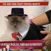

Suntem un neam de privitori pe gaura cheii. De aceea, mai toţi artiştii, sportivii, politicienii, ba chiar şi scriitorii de blog simt nevoia să se dezbrace de secrete sub ochii publicului larg. Persoane publice de tot felul îşi deschid în faţa telespectatorilor şi cititorilor de tabloide casele, maşinile, dulapurile, calculatoarele sau coşurile de gunoi. Nu se ştie pe cine şi mai ales de ce interesează care este mâncarea preferată a Marţafoiului Marty Mustăcilă al Oanei Zăvoranu, cum îşi scoate părul din nas Viorel Lis ori câte datorii morale are Victor Piţurcă faţă de amanta Vica.
Şi totuşi, ecranele televizoarelor, site-urile şi ziarele abundă în detalii anoste din viaţa unor celebrităţi efemere, în poveşti de alcov şi amintiri din copilăria unor oameni despre care am uitat de mult cu ce se ocupă ei de fapt.
Nu-i vorbă, putem pricepe fascinaţia publicului masculin pentru garderoba Annei Lesko sau Andreei Bălan. Îi ajută să viseze cu mâna în pantaloni ochii deschişi. E justificată şi dorinţa publicului feminin de a se informa în legătură cu exerciţiile pe care le practică la sală Bogdan Vlădău sau cu frământările filozofice ale lui Cătălin Botezatu. Dar care este destinatarul reportajelor despre viaţa şi opera Oanei Roman? Scandalurile din dormitorul lui Horia Moculescu pentru cine au relevanţă? Cine vrea să ştie cum stă cu dragostea Marius Baldovin sau cum arată debaraua lui Stelian Ogică?
Poze cu mine în papuci mâncând o portocală
Probabil fascinaţi de strălucirea vieţii de vedetă fără inhibiţii, tot mai mulţi anonimi încearcă şi ei să „dea din casă” mai mult decât şi-ar dori vreodată cineva să afle. Aproape că nu există blog sau site care să nu conţină poze mai mult sau mai puţin artistice ale proprietarului, detalii despre neamul, cartierul şi slujba acestuia, confesiuni la ceas de seară şi comentarii dintr-o perspectivă cum nu se poate mai intimă. Oamenii scriu şi citesc despre ciorapii mirosiţi în microbuzul care-i duce serviciu, despre ora la care se trezesc, deapănă amintiri cu panoul de onoare din perioada şcolii generale şi publică poze cu ei mâncând o portocală în bucătărie. De multe ori acesta e tot conţinutul. Nu-i nicio idee, nicio poantă, nicio dezbatere, nicio intrigă, nicio ştire comentată, nicio demonstraţie, nicio conexiune de informaţii, nicio concluzie, niciun argument, nicio ironie sau măcar vreo insinuare subtilă.
Părem incapabili de a ne desprinde de propriul EU văzut drept centru al Universului. Nu ne putem lăsa reprezentaţi doar de prestaţiile noastre, fie că e vorba despre un text ori comentariu online, despre un album muzical sau despre un film artistic.
Eliberaţi ideile!
Oare e chiar imposibil ca atunci când suntem încântaţi de vocea lui Plácido Domingo să ne abţinem de la a ne întreba ce culoare au izmenele tenorului? Oare e atât de greu să admirăm un tablou oarecare fără să scotocim date despre viaţa amoroasă a pictorului? De ce ne-ar interesa care e marca de suc preferată a lui Dan Brown? Contează ce zodie e Adele?
Lăsaţi ideile să trăiască liber, nu le ucideţi sau alteraţi alăturându-le detalii obscure precum vârsta, moaca, valoarea contului bancar, preferinţele culinare, experienţele şcolare sau condiţiile locative ale emitentului.


{kind=link}
{kind=link}
{kind=link}
{kind=link}
Frumos si adevarat scris! Bravo!!!
nu se stie niciodata cind devii un … Enescu (sa zicem) si atunci cum ar suna: poza cu Enescu in papuci mincind o portocala. Sau o shaorma … Deci eu zic ca are sens. Stiu, sunt rau, dar vreau sa-ti faci cit mai multi prieteni in online
Stiu, sunt rau, dar vreau sa-ti faci cit mai multi prieteni in online  )))
)))
Pe de alta parte, da si tu link-ul la blogul cu poza
@Ratatouille
Trivial, intruziv şi irelevant ar suna. Asta dacă Enescu ăsta n-ar fi cel mai şaormar de la Dristor încoace.
Din raţiuni de concentrare a calităţii, eu nu vreau să-mi fac cât mai mulţi prieteni. Nici online, nici offline. Dar nu pot refuza rugămintea unui cititor fidel, aşa că iată poza cu watermark-ul blogului de pe care provine (mijloc jos, pe sticla de apă, şliţul domnului şi burta doamnei).
Comments on this entry are closed.